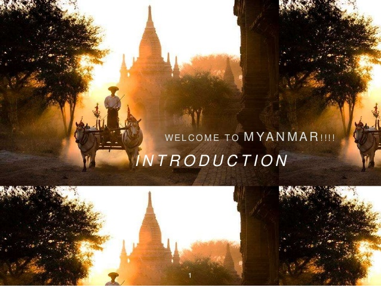

{kind=link}

My name is Shoon Yadana.
Welcome to my Webpage!
I would like to tell you all about my country! 
The name of my country is Myanmar or you can also call it Burma.It is not a very famous country, some people might not even heard of it, that is why I would like to introduce it to you guys.
It is a country located in the Southeast Asia, about 74% of the populition is Buddhist and Christain being the second runner up and other religions as well as Muslim and Hindu.
The country is a Buddhist country so there are pagodas and temples everywhere.
The capital of Burma is Nay PyiTaw and it's old capital and also known as the commercial capital,Yangon are one of the most famous cities in Burma.
The city that I live in is Mandalay which is the second largest city in Burma and was the last royal capital.
There are alot of amazing places that you can visit in Mandalay such as the famous Mandalay Kyone, Kuthodaw Pagoda, Myatheindan Pagoda in Mngun is also a tourist sight in Mandalay.And the last famouse place in Mandalay is the Maynu tample in Inwa.
Another popular city is a place every tourist must visit is Bagan filled with hundreds
and thousands of old pagodas which will appear in any direction you point at!
Since Burma is a Buddhism country it is filled with golden shimmering pagodas, the popular pagodas include, Shwedagon Pagoda, the most popular pagoda of all the other, Kyite HteeYoe Pagoda which is a pagoda filled with amazements because the pagoda is actually a rock hanging on a cliff barely even touching the ground and has never caused any acidents to the travelers who takes so many risks to get to the top of the pagoda.
Another very famous pagoda is the Maha Bawdi tataung with it's standing and laying down structure of the Budda.
There is also a very interesting place that you must visit if you come to Burma, it is called Inlay ,a city built over water, very famous for paddleing their boats and fishing with their feets!
Local fishermen are known for practicing a distinctive rowing style which involves standing at the stern on one leg and wrapping the other leg around the oar.
Myanmar also have some of the breathtaking beaches, which are
Among all the beaches Ngapali Beach and Mergui Archipelago Beach are the most beautiful beaches that you can fine in Burma.
So I think this gave you some information about my country. The purpose of this presentation is that I just want to show you guys the beauty of my country. I invite all of you to come visit my country! <
{kind=link}